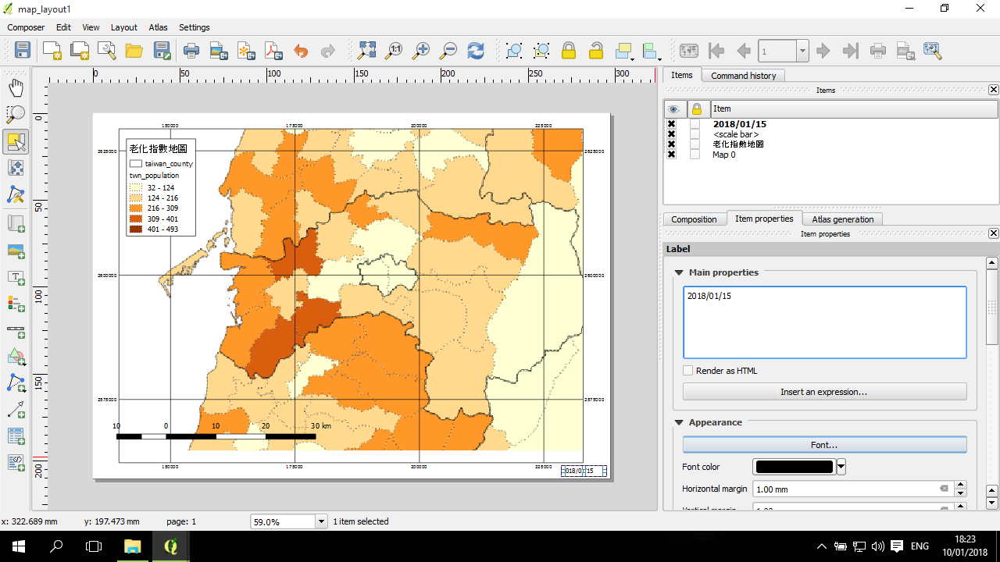
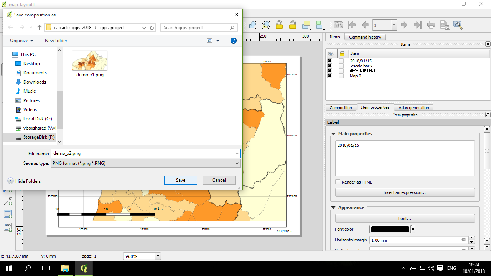

地圖排版 (layout)
地圖排版是一個可以將地圖及相關元素放到地圖上的一個過程。 QGIS 提供一個地圖排版的環境，叫做 Print Composer，主要功能是將地圖、圖例、比例尺、指北針等加入到一個平面地圖上的環境。
地圖中要呈現的內容，包括點、線、面的樣式，都需要在 QGIS 主畫面作設定。Composer 只負責平面地圖的其他元素的設置。
平面地圖編輯器
Composer 是在主畫面的 Project-->New Print Composer 來打開：
Composer 畫面打開，中間的主要區塊是一張白紙，平面地圖將需要設置在這張紙上：

調整平面地圖的大小與方向
這一步非常重要
在設計平面地圖的第一步是，設定好預計要出圖的紙張大小與方向，在右邊欄位的 Composition 的第一個區塊中，Presets 中可以選定常用的紙張大小，如預設是 A4(也可以進一步用 Custom 進行客製化修改)；Orientation選 Potrait 或 Landscape：

如果地圖預計是要設計並放在海報中，可以依據海報的大小進行設置(如 A0、A1等)；若是預計要放在書面報告中，例如放在 A4 的報告中，則可以設置成 A4 或 A5。
如果是準備期刊用的地圖且橫放，建議可以用 A5 大小進行設計；後續可依照期刊要求進行大小的調整。
這一步非常重要的原因是，若將一張設計成 A4 大小的地圖靜態圖檔放到海報中拉大，會發生一些視覺上的變化，包括線會變粗等，導致地圖質感下降；
反之，若將一張設計成 A0 大小的地圖靜態圖檔，放到 A4 中(縮小)，則會發生另一些視覺上的變化，包括原來看起來粗細剛好的線會變得非常細等，地圖整體質感會變差。
加入「地圖」及各項地圖元素
加入「地圖」
在平面地圖的紙張中，加入「地圖」是指加入在 QGIS 主畫面中所看見的圖層。
在右邊的工具中，選擇Add new map 按鈕，然後在紙張上畫一個預計要放地圖的範圍：
加入圖例
圖例提供地圖上的各項圖層的樣式的資訊。
加入圖例的方式是透過點選左邊的 Add new legend 按鈕，在紙張上畫一個放圖例的範圍：
然後圖例就出現了，可以透過左邊第三個按鈕的工具來進行拖拽移動到適當位置：
加入比例尺
比例尺提供的資訊是地圖中的長度代表地表長度的比例資訊。
加入比例尺的方式是在左邊工具中，點選 Add new scalebar，然後在地圖紙張上點一下：
比例尺就產生好了，在選擇比例尺的情況下，可以試著調整右邊比例尺欄位中的設定，包客左2、右3 表示比例尺的兩種距離長度：
加入文字
可以加入一些文字來補充說明地圖的資訊，包括常看見的文字說明包括地圖的投影系統、製作日期、製作人員等。
在地圖適當的地方畫一個矩形，然後在右邊 Label 底下輸入要寫的文字：

調整地圖
調整範圍
先點選地圖，然後點左邊工具的 Move item content 按鈕：
這時候可以按著地圖進行拖拽移動，也可以透過滑鼠滾輪進行縮放：
不過如果是縮放範圍，建議用右邊的Map 底下的 Scale 直接進行設定：
加入地圖邊框
在右邊 Map 底下的 Frame 左邊的框框點選標記(按一下出現 X 表示啟用)：
加入地圖格線
同樣是 Map 底下，找到 Grids，按一下 + 號的按鈕：
在Draw "Grid 1" grid 中的 Interval 分別設置 X與Y方向的格線間隔
可以選擇是否加入格線的數值，若需要，標記 Draw coordinates，並進行相關呈現的設定：
設置好後放大地圖來看結果 (在 move item content 以外的環境)：
儲存用與輸出靜態地圖
設置好後，可以點一下 Save project 來暫存整個地圖(包括主畫面內容與 composer)：
輸出靜態地圖
選好路徑及輸入檔名：

點儲存(Save) 後，會出現另一個小視窗，詢問關於輸出的選項，可以使用預設的 300 dpi 等設定：
300 dpi 是地圖輸出(期刊、海報)最基本的大小設置。
完成地圖輸出，這張地圖較前一節直接輸出的結果來說，多了比例尺、圖例等資訊：
加入子圖、第二張地圖
子圖是既有地圖上的一張小圖，用以表示目前這地圖範圍所呈現的範圍是相對於更大的一個範圍內的哪個區塊。
先確認目前這張圖的圖層是鎖起來的，即後續調整地圖範圍不會修改這張圖的範圍：
在左邊工具中，使用 Add new map 工具，在適當的地方畫一個小區塊：
透過Windows 工作中軟體中，回到主畫面；將其他複雜的資訊取消掉 (即子圖所要呈現的樣式)：
再回到 composer 視窗，點右邊的 Update preview，再透過 move item content 調整子圖的範圍與大小：
在左邊工具中選 Add Shape-->Add Rectangle，然後在子圖上適當的地方畫一個矩形：
在點選矩形的情況下，點右邊的 Shape 底下的properties 的 Style 右邊的 Change...；在這個小視窗設定好Fill 為 No Brush：
矩形的塗色被拿掉了：

再打開同一個小視窗，這回把 Outline 的顏色改成紅色：
PS:
若有後續放到向量圖編輯器，例如 Adobe Illustrator / Inkscape 之類進行地圖點進一步後製的需求，可以試著輸出成 .svg (Composer-->Export as SVG)。